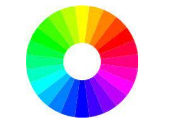

SABER QUÉ COLORES FAVORECEN AL CLIENTE TENIENDO EN CUENTA LO QUE QUIERE TRANSMITIR
TEST DE COLOR ROSTRO-VESTUARIO
TEST DE COLOR CABELLO-ROSTRO
ESPACIO BIEN ILUMINADO CON LUCES LATERALES BLANCAS QUE HAGAN EL EFECTO DE LA LUZ DEL DÍA. EN SILLÓN DE PELUQUERÍA
USAR LA CAPACIDAD QUE TIENE EL COLOR PARA TRANSMITIR SABER EXPLICAR AL CLIENTE CUANDO UN COLOR LE VA BIEN O NO Y SABER EXPLICAR LA RAZÓN PRUDENCIA Y DISCRECIÓN CUANDO EL CLIENTE NOS HAGA COMENTARIOS
FICHA DE ANÁLISIS PREVIO DEL COLOR: SIRVE PARA REGISTRAR TODO LO RELACIONADO CON LOS COLORES QUE UTILIZA EL CLIENTE ANTES DE LA ASESORÍA
FICHA DE COLOR PARA CADA PAÑOLETA: EN ELLA APUNTAMOS CÓMO LE SIENTA CADA COLOR A NUESTRO CLIENTE
MUESTRAS DE COLOR EN TELA (PAÑOLETAS) Y PAPEL PARA REALIZA EL TEST
FOTOGRAFÍAS FACIALES Y CORPORALES
-DECIDIREMOS LA GAMA DE COLORES QUE TIENE QUE ESTAR EN LA IMAGEN ESTÁTICA DEL CLIENTE (VESTUARIO, PEINADO Y MAQUILLAJE)
-ANALIZAREMOS LOS SIGNIFICADOS DE LOS COLORES QUE MÁS FAVORECEN A NUESTRO CLIENTE PARA QUE SEAN POTENCIADORES DE LO QUE SE QUIERA TRANSMITIR
-AYUDAREMOS AL CLIENTE A ELEGIR LA COMBINACIÓN DE COLOR MÁS ADECUADA PARA CADA CIRCUNSTANCIA
-OFRECEREMOS DISTINTAS OPCIONES DE MAQUILLAJE Y COMPLEMENTOS
IMAGEN ESTÁTICA
SENTIDO DE LA VISTA
- EL COLOR ES LA IMPRESIÓN QUE PRODUCE LA LUZ EN EL CEREBRO AL ENTRAR EN CONTACTO CON LOS ÓRGANOS DE LA VISIÓN
- COLORES PRIMARIOS: LOS QUE COMBINADOS ENTRE SÍ CREAN EL ESPECTRO CROMÁTICO
- COLORES COMPLEMENTARIOS:
- TONO: ES LO QUE DIFERENCIA EL COLOR Y POR LO QUE LO DESIGNAMOS: VERDE, ROJO, etc.
- MATIZ: DISTINGUE UN COLOR DE OTRO: VERDE AZULADO,ROJO ANARANJADO, etc.
- SATURACIÓN: MIDE LA INTENSIDAD DE LOS COLORES.
- BRILLO: EL GRADO DE LUMINOSIDAD DEL COLOR.
- TEMPERATURA: SENSACIÓN TÉRMICA QUE PRODUCEN LOS COLORES:
CALIDEZ O FRIALDAD.
- ARMONÍA: SE PRODUCE POR LA COMBINACIÓN DE COLORES QUE TIENEN UNA O MÁS CARACTERÍSTICAS COMUNES
- CONTRASTE: SE PRODUCE CUANDO LA COMBINACIÓN DE COLORES NO PRESENTA CARACTERÍSTICAS FÍSICAS SIMILARES SINO CONTRARIAS
- GAMAS: TIPOS DE AGRUPAMIENTO DE COLORES EN ESCALA
- PALETAS: CONJUNTO DE TONOS, CON SUS LUMINOSIDADES Y SATURACIONES QUE SE ELIGEN CON UN MOTIVO.
NECESARIO: UNA OBSERVACIÓN GENERAL DEL CLIENTE:
ADEMÁS DE: LOS COLORES QUE ELIGE PARA VESTIRSE Y QUÉ TRANSMITE CON ELLOS
- COLOCA AL CLIENTE FRENTE AL ESPEJO: LUZ NATURAL
- DESMAQUILLA Y LIMPIA PERFECTAMENTE LA PIEL
- PARA EL TEST ROSTRO-VESTUARIO: CUBRIR LA ROPA DEL CLIENTE CON UN BATÍN COLOR NEUTRO
- PARA HACER EL TEST CABELLO-ROSTRO:CUBRIR EL CABELLO DEL CLIENTE CON UN GORRO O PAÑUELO DE COLOR NEUTRO
- LAS PAÑOLETAS DEBEN CUBRIR DESDE EL CUELLO HASTA LA CINTURA, SE SUJETAN EN LA NUCA PARA HACER UN ESTUDIO CON TRANQUILIDAD
IDENTIFICAR EL MATIZ O SUBTONO DE LA PIEL SERÁ IMPORTANTE PARA SABER SI PERTENECE A:
GAMAS FRÍAS: AZULADO
GAMAS CÁLIDAS: AMARILLO
- COLOCA AL CLIENTE FRENTE AL ESPEJO: LUZ NATURAL
- DESMAQUILLA Y LIMPIA BIEN LA PIEL
- CUBRE AL CLIENTE CON PAÑOLETAS DE GAMAS FRÍAS Y CALIDAS PARA VER CUAL LE FAVORECE
LA GAMA QUE LE FAVORECE: DESTACARÁN LAS OJERAS, OSCURECERÁ LOS DIENTES Y LE DARÁ UN ASPECTO CANSADO
LA GAMA A LA QUE PERTENEZCA: DISIMULARÁ OJERAS Y PEQUEÑAS ARRUGAS Y LE HARÁ BUENA CARA
- SE PUEDE IDENTIFICAR EL MATIZ DE LA PIEL MIRANDO LA MUÑECA:
- CON EL ESTUDIO DEL CABELLO Y FIJÁNDONOS EN SU TENDENCIA SABREMOS:
EN CADA ESTACIÓN SE PUEDEN VER UNOS COLORES:
ASÍ COMO LAS ESTACIONES TIENEN SUS COLORES LAS PERSONAS TENEMOS UN TONO DE PIEL, OJOS Y CABELLO CON UNA COLORACIÓN PARECIDA A LAS ETAPAS DEL AÑO
- PAÑOLETAS DE COLOR: PIEZAS DE TELA, DE ALGODÓN, DE MUCHOS COLORES. CON ELLAS SE CUBRE EL CUELLO Y ESCOTE DEL CLIENTE. TIENEN LOS COLORES DE LAS CUATRO ESTACIONES DEL AÑO Y SUS VARIEDADES TONALES.
- CAPAS DE GAMA: PIEZAS DE TELA EN FORMA DE SEMICÍRCULO (BABERO) DE VARIOS COLORES DE UNA GAMA DE COLOR CONCRETA
- MÁSCARA O CARETA DE COLOR: IGUAL QUE LAS CAPAS DE GAMA PERO EN CARTULINA PLASTIFICADA
{kind=link}